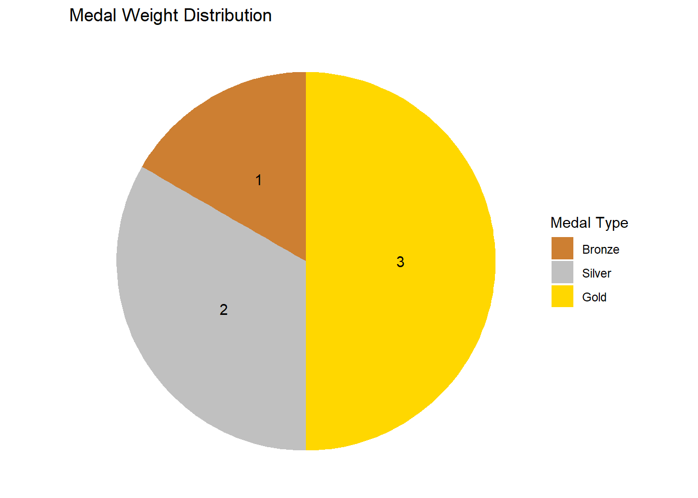
The Olympic Advantage
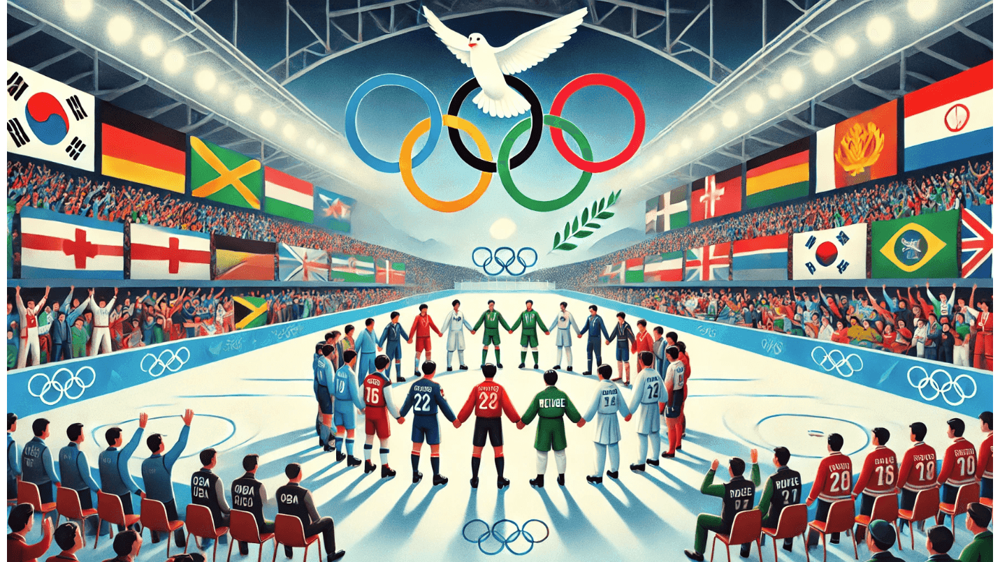
Introduction
Every two years, people across the world turn their attention to the Olympic Games. This global event is a celebration of unity, cultural exchange, and human achievements: a chance for nations to set aside differences and come together for athletic competition. Each country sends their best athletes to compete in various events with the hopes of bringing the gold back home. This leads to the motivating question for this project analysis: ‘What makes a country succeed in the Olympics?’ The Olympics serve as a metaphor for national and cultural identity, competition, and international relations. This analysis helps uncover the key factors that contribute to a nation’s success in the Olympics.
The primary data source we utilized was the Kaggle 126 Years of Historical Olympic Dataset, which encompasses all historical records from every Olympic Games held between 1896 and 2022. The primary limitation in this data set is the inclusion of past participating nations that don’t exist anymore or use a different name in modern day. Additional data sources were used to supplement individual research topics; the primary obstacle with combining the datasets was wrestling with naming schemes to align the data properly for individual countries.
Prior studies on Olympic success have been conducted by different researchers, highlighting a fascination with understanding the dynamics behind achievements at this global event. Analysis conducted by personnel at Georgia Institute of Technology1 and Dartmouth College2 have focused solely on the economic impact on Olympic performance. Other publications have looked at investment into sports development3 and wearable technology4 as factors that influence athletic performance. Lastly, a strong focus on predictive modeling5 has been researched since people seem to care about wagering on future results.
Our group has shifted our analysis ever so slightly. We’ll be incorporating a weighted medal count system in our analysis, where the value of gold is three times bronze & silver is twice bronze. We want to identify multiple prevalent factors influencing success, and take a grouping approach of Olympic games with multiple years of history in order to highlight patterns and trends that successful countries share.
Sports Culture Findings
A key factor influencing a country’s Olympic success is its sports culture—how resources are allocated to sports and how active the population is. Sports culture reflects not only spending but also community engagement in physical activities.
To explore this, we used data from Myprotein, ranking the sportiest countries based on activity levels, and Euromonitor, which provided insights into sports spending by country. The Euromonitor data, originally in local currencies, was standardized to USD for consistency.
Our findings revealed two major trends:
- Countries that spend more on sports infrastructure and programs tend to win more Olympic medals.
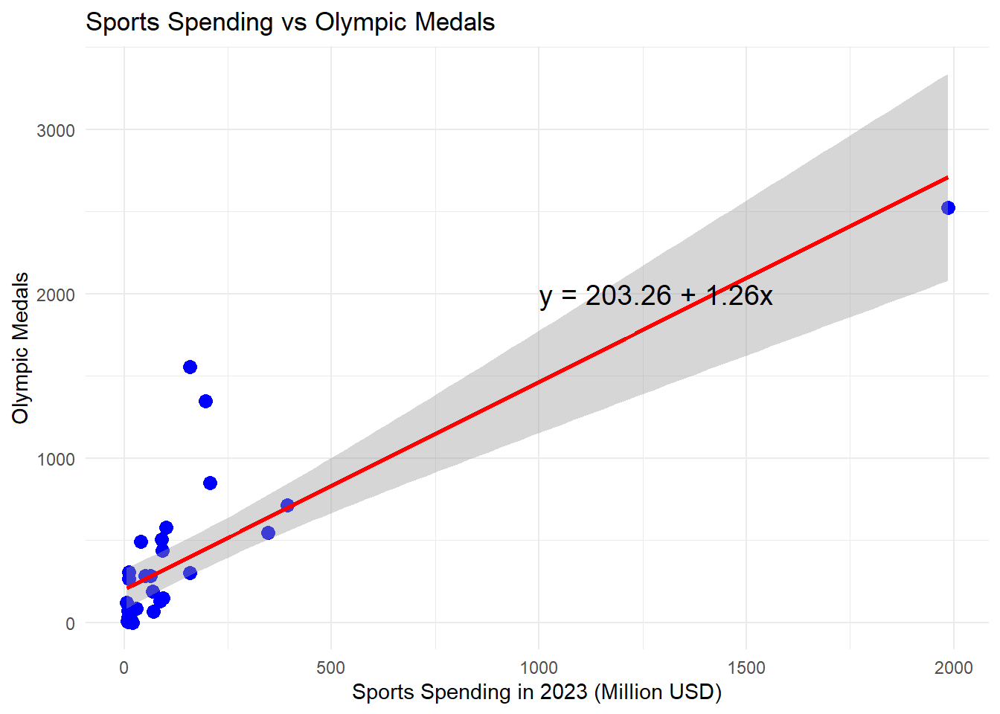
- Countries with a more active population (greater sports participation) are more likely to produce successful athletes.
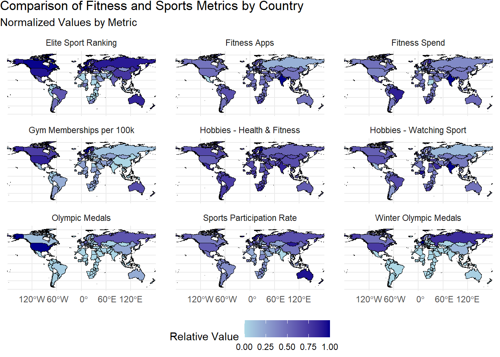
However, it’s important to recognize the limitations of this analysis. The spending and activity data represent a specific point in time, while Olympic medal counts reflect historical achievements to date. This mismatch prevents tracking how changes in sports investment over time impact success.
Despite this limitation, our analysis aligns with previous studies of European nations, showing a strong connection between sports spending and performance. Globally, this relationship holds true—investment in sports and fostering an active community creates an environment where athletes thrive.
In conclusion, a robust sports culture, supported by investment and participation, plays a vital role in nurturing athletic talent and driving a country’s success on the Olympic stage.
Economic Findings
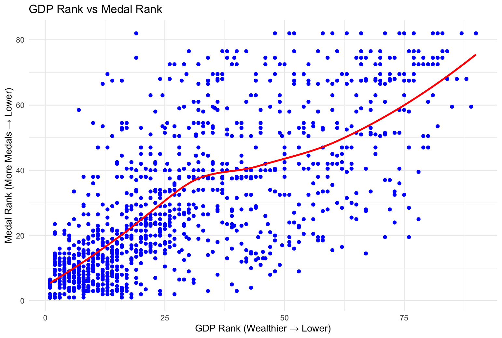
Next, we looked at analyzing a country’s economic indicators to answer ‘Does a country’s economic performance affect its performance at the Olympics?’ A country’s economic output and its population size can drastically help support and fund the investment into sports facilities and training for athletes to help perform in the Olympics.
When analyzing the potential effect a country’s economy has on its Olympic performance, we decided to focus on a couple primary indicators. One being the overall GDP of a country. In this approach each country was ranked per Olympic year by their GDP and overall medal counts. When plotted together, the tendency that the top GDP countries produce the most Olympic medals holds true. As you go into the lower ranks of the data this relation becomes less consistent.
To measure a country’s economic performance, we used the Global Economic Indicators provided by the UN System of National Accounts. Specifically to gather the GDP output for a country in a given year. The biggest limitation in using this data is that the countries in the dataset don’t always match up one to one with the countries in the Olympic dataset and require some wrangling to settle.
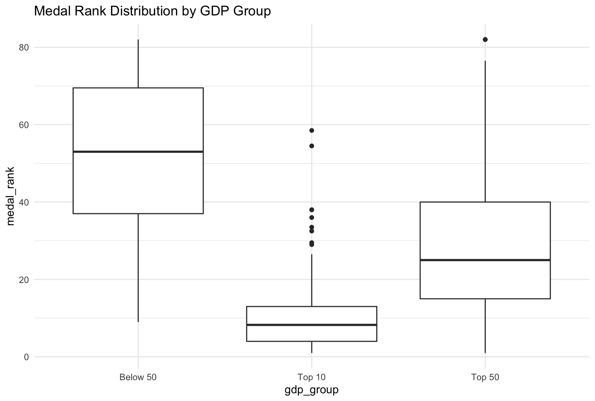
To generalize the relationship, we took a look at a grouped approach. The top 10 GDP producing countries were placed in one group, then the top 50 outside of the top 10 then the remaining bottom countries. While some outliers exist that can’t be accounted for by economic factors alone, the ranges fall pretty in line with their respective medal ranks. The top medal countries are almost always also economic powerhouses.
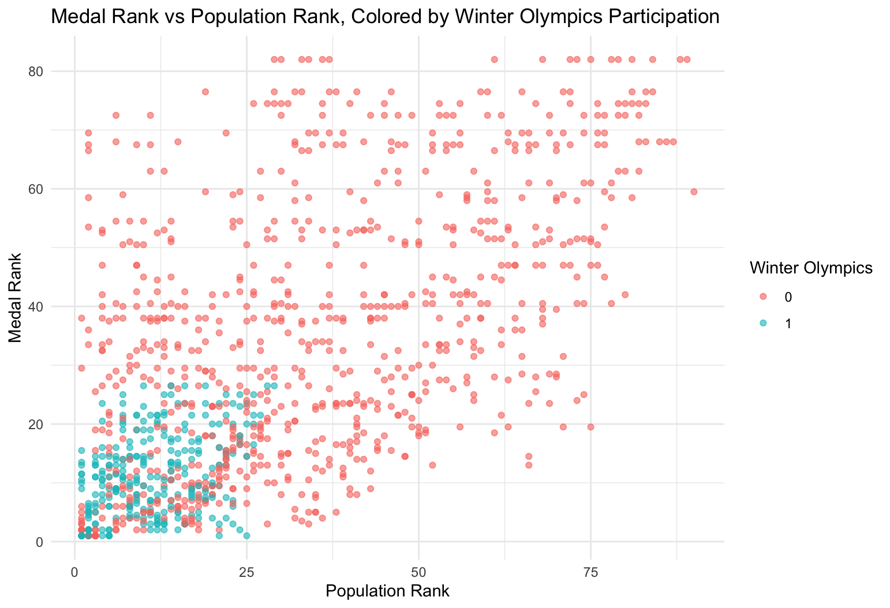
Another important economic factor which is highly related to GDP is population. Naturally a higher population would in theory give a better chance at producing Olympic athletes. In fact this relationship is pretty similar to as seen in GDP but not as strong. However it is interesting to note that generally less countries participate in the Winter Olympics and produces a generally tighter spread between the Population and Medal rank. Given our findings it seems evident that wealthier countries who inherently have more resources to invest in sports, perform better at the Olympics, albeit with some exceptions.
Geography Findings
Geography fundamentally shapes countries by determining their natural resources and climates. There are multitudes of factors influenced by geography, this study aims to highlight the influences of latitude and climate zones. One specific analysis aims to answer the question: ‘Does a country’s geographic characteristics affect its performance at the Olympics?’ Geographical data provides valuable insights into how factors such as location, climate, and available resources influence a nation’s performance in the Olympics. This holistic approach allows for identifying patterns and trends that successful countries share environmentally.
A supplemental data source utilized in this specific analysis was the Google Developers coordinate system. This dataset includes average longitude and latitude coordinates for modern countries. However, a limitation of this approach is that these average coordinates may not accurately capture a country’s location, particularly for large landmass countries like the U.S., which spans multiple lines of longitude and latitude.
Another supplemental data source used was the World Bank historical population estimates. This dataset contains a comprehensive list of population estimates for countries dating back to 1960. However, there is some uncertainty regarding the accuracy of older records, particularly those compiled before the use of digital census methods.
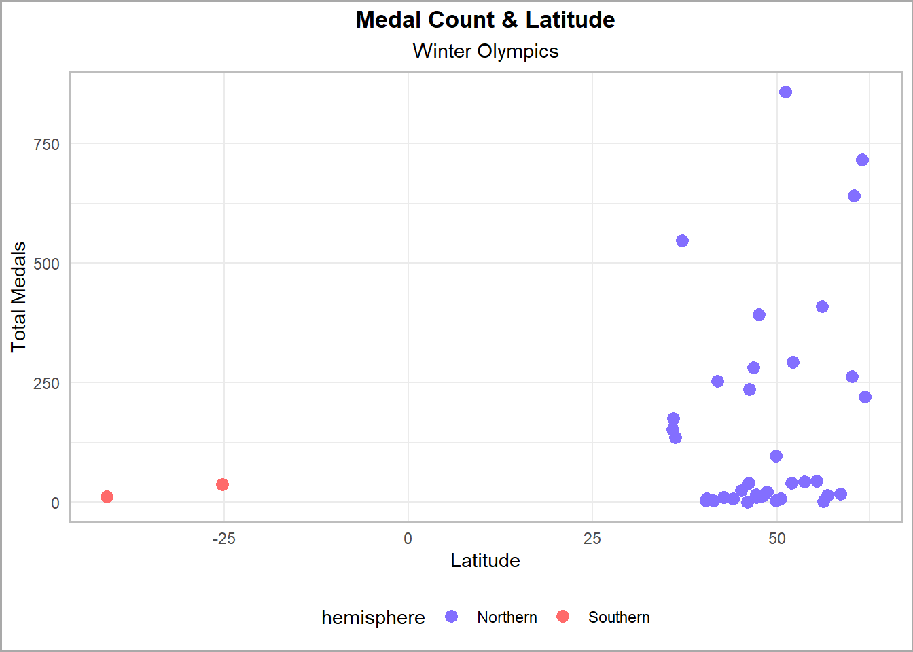
Within the Winter Olympics, countries located far from the equator exhibit success. Although no mathematical relationship can be defined, it can be assumed that some relationship exists. It can be concluded that countries located in warmer climates have little success due to lack of resources available to replicate a winter sport setting. A limitation here is the lack of data points available to analyze, as the Winter Olympics have a smaller number of medals available to distribute as compared to the summer counterpart.
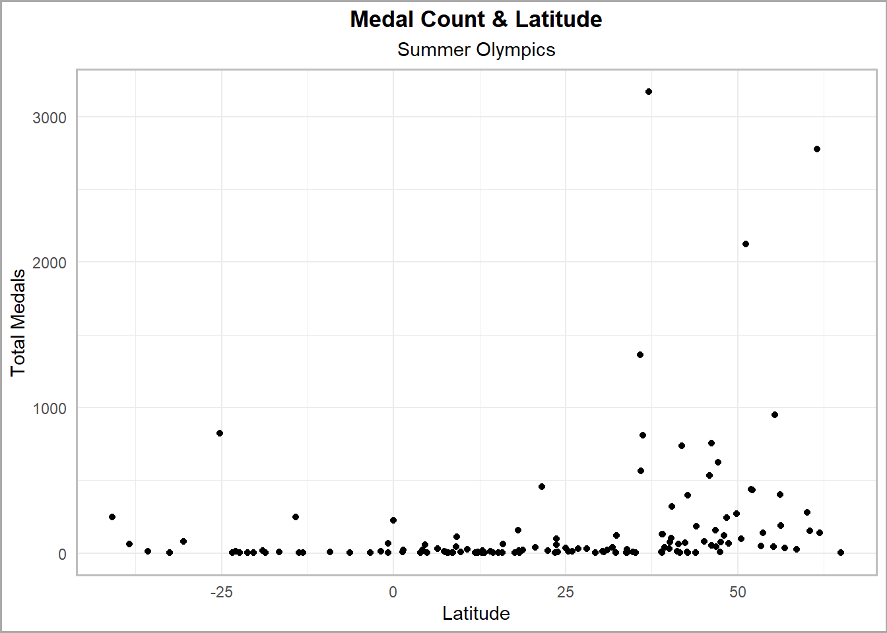
Turning attention to the Summer Olympics, there is no linear relationship between latitude and medals. To investigate further, the data is normalized by population size in an attempt to linearize the relationship.
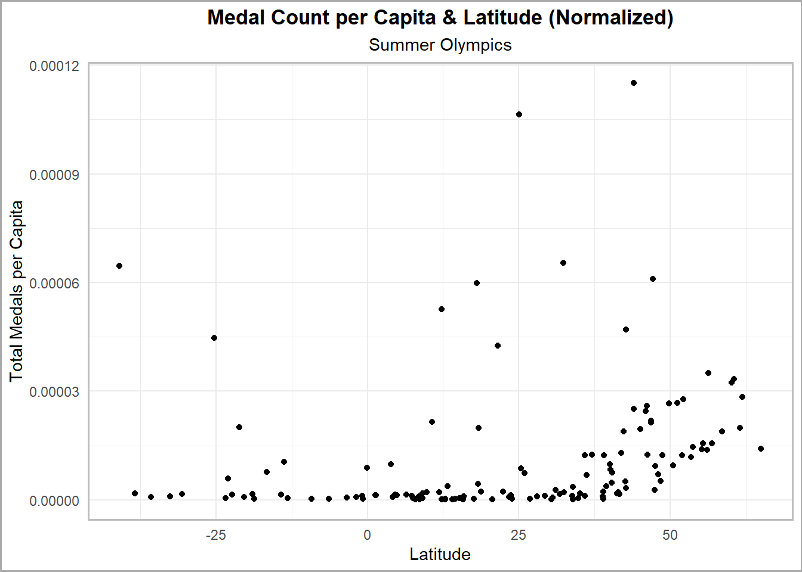
After normalization, the overall shape of the graph doesn’t change significantly. Although no linear relationship can be concluded, other assumptions can be made about the effects of population. Population size doesn’t have a strong influence on success at the Summer Olympics with relation to where a country is located. This implies that other factors, such as socio-economic ones, are more prominent in determining how a country performs.
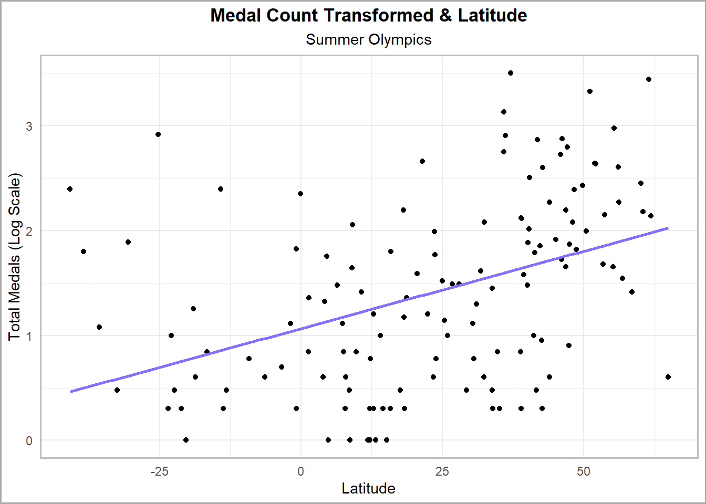
To take this analysis one step further, a statistical transformation called the Box-Cox transformation was performed. This transformation is a technique used to stabilize the variance and make the data more closely approximate a normal distribution. A logarithmic transformation was applied to the data, which ends up resulting in a linear shape. This helps conclude that there is a positive relationship between latitude and success; however it is not linear meaning other factors not studied play a role in influencing performance. Some of those other factors are explored in the other portion of this report.
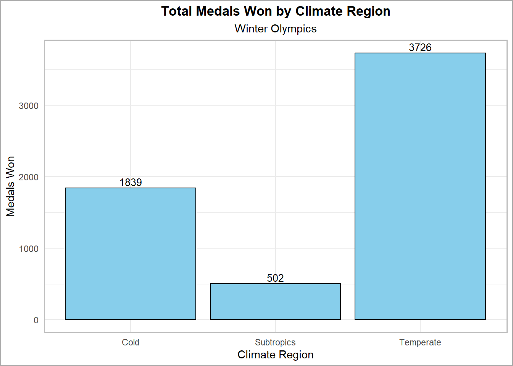
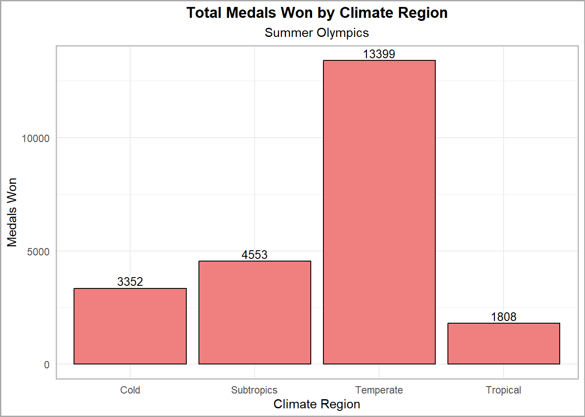
Within both Olympic Game settings, countries that exist in the temperate climate zones showcase dominance. There is strong reason to believe that countries in the temperate zone have access to resources that are not as readily available to other countries, which significantly influences their outcomes.
Host Country Findings
Lastly, we looked at the “host country advantage”, answering the question “Does being the host country impact a country’s performance at the Olympics?” Being the host country could lead to various perceived advantages such as more athlete participation and home field/court advantage. Through the analysis, we hope to uncover whether being the host contributes to a significant advantage in achieving more Olympic success.
To expand our host country analysis, we used a supplemental 2024 Paris Olympics Kaggle data source. Similar to our main data set, this source includes extensive and unbiased information (e.g. athletes, events, medal counts) from the most recent Summer Olympics.
From a preliminary look at the historical weighted medal counts for each host country over time, we find that there is a general pattern of host countries earning a higher weighted medal count during their host year.
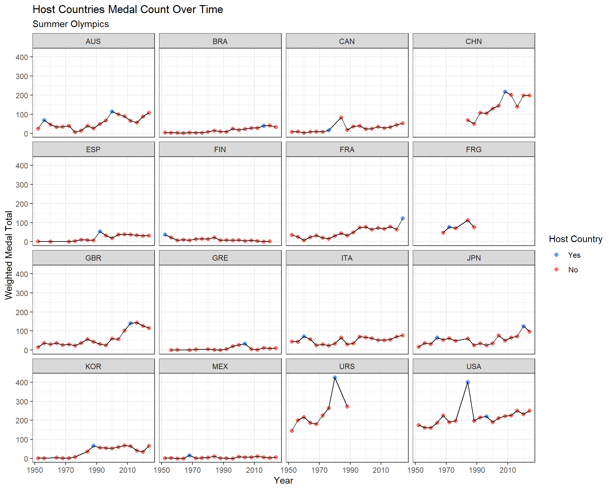
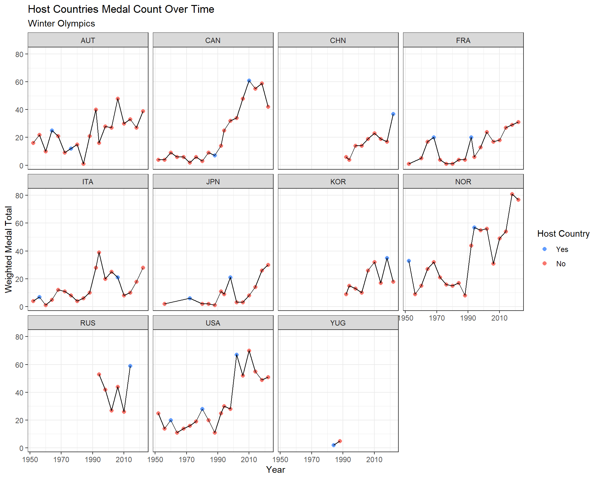 However, to determine the existence of an advantage we also performed some statistical modeling.
From our classification models predicting host status using weighted total medal count, year, country, and Olympic season, we found the weighted total medal counts variable scored the highest in importance. This indicates that there is a strong association between a higher weighted medal performance and hosting the Olympics, even after considering other variables like year, country, and season.
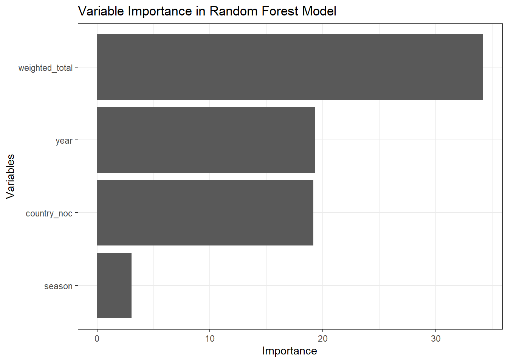
Lastly, through a time series analysis projecting the host year weighted medal count against the actual weighted medal count, we found that in 92% of these cases, the actual weighted medal counts exceeded the projections. These findings provide us with good evidence that there is some “host impact” on the country’s weighted total medal counts.
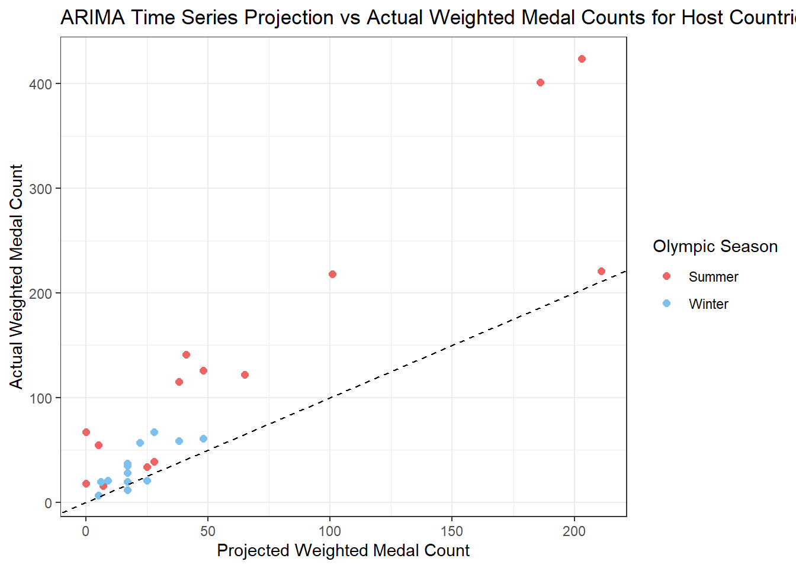
Within this analysis, there are some limitations to consider, such as unmodeled variables within each host country that could also be contributing to their Olympic success (e.g. economic stability, athlete participation, athletic investment, etc.). Even so, the strong correlation between hosting the Olympics and achieving a more successful Olympic performance remains undeniable.
Summary of Findings
From our analysis, we found that a combination of various factors contribute to a country’s success at the Olympics. Economic powerhouses and nations with a strong sports culture are often the most successful at the Olympics, leading the weighted medal counts. There is a correlation between where a country is located and success at the Olympics; however this is heavily influenced by available resources and historical infrastructure resulting from environmental factors. Finally, host nations typically achieve their greatest success during their host year, leveraging the advantages of hosting. While each factor plays a distinct part, it is their combined influence that provides a complete understanding of overall Olympic success.
Future Directions for Research
Building on the findings from this report and previous studies, there are several areas we can explore further to gain a deeper understanding of what makes a country successful in the Olympics. Some key recommendations include:
- Multi-Factor Analysis by Country This would involve analyzing all four components discussed in this report together to see how they interact with one another. For example, we could identify which factor has the most significant impact on a country’s gold medal count or how these factors influence each other. This holistic approach could offer new insights into Olympic success.
- Deeper Exploration in the Data A deeper dive into specific significant Olympic events would further help supplement our findings. Our current research serves as a general overview of Olympic trends. By honing in on more specific outcomes, like the most recent olympics, we could better infer why China for example is going neck in neck with the United States in medal count now. Or why smaller countries like Australia or the Netherlands perform way above their rate.
- Country-Specific Athlete Rewards Another interesting angle would be to explore the impact of monetary rewards or incentives provided by countries to their athletes. By focusing on how these rewards motivate athletes to perform better, we could understand whether higher reward values lead to greater Olympic success.
To learn more about each specific analysis:
Footnotes
Boudreau, Jennifer, James Kepner, and Joseph Rondone. “The Miracle on Thin Ice: How a Nation’s GDP Affects Its Olympic Performance.” Georgia Institute of Technology, https://repository.gatech.edu/server/api/core/bitstreams/1aa2b537-c3de-4177-8295-3fcd3a03a965/content↩︎
Bernard, Andrew B. “Olympic Medal Count: A Statistical Analysis.” 2018, Dartmouth College, faculty.tuck.dartmouth.edu/images/uploads/faculty/andrew-bernard/olymp60restat_finaljournalversion.pdf.↩︎
Yanatma, Servet “Did European countries spending more on sports perform better at the Olympics?” https://www.euronews.com/2024/08/28/did-european-countries-spending-more-on-sports-perform-better-at-the-olympics↩︎
VanHeest, Jaci “Wearable Technologies Help Olympians A chieve Top Performance” https://today.uconn.edu/2018/02/wearable-technologies-help-olympians-achieve-top-performance/↩︎
Duncan, Robert C. and Parece, Andrew. ‘Population-adjusted National Rankings in the Olympics’. 1 Jan. 2024 : 87 – 104., https://content.iospress.com/articles/journal-of-sports-analytics/jsa240874↩︎